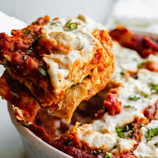

Almost Vegan Lasagna

Try this delicious vegan lasagna, made with
yuca, black beans, and spinach!
Ingredients
- 3 yuca
- 1 can pasta sauce
- 1 box pre-cooked lasagna noodles
- 1 egg
- 1 tbsp nutritional yeast
- 1 can black beans
- 1 bag spinach
Directions
- Peel and chop the yuca into 1 inch cubes.
Boil yuca until soft
- Blend yuca with nutritional yeast and egg
- Mix black beans, spinach, and pasta sauce in a large bowl
- Layer noodles, yuca paste, and sauce mix in a baking pan
- Cook at 350 for 40 minutes. Let cool and enjoy
Home Page